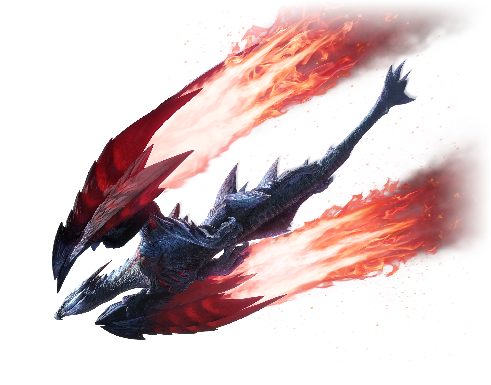

Crimson Glow Valstrax is a Large Monster that appears in Monster Hunter Rise (MHR or MHRise). It is a species variant of Valstrax from other titles. Large Monsters like Crimson Glow Valstrax are hostile and are usually the primary objective of Hunts. They provide valuable Materials when defeated.
The item with the lowest drop chance, dropped by Crimson Glow Valstrax, is the Red Dragon Orb, which is the item that will have hunters farming Crimson Glow Valstrax for a while. Check our Builds to get better prepared against Crimson Glow Valstrax and farm the item more quickly.
Crimson Glow Valstrax Guide: Characteristics, Weaknesses, Drops, Locations, Weapons & Armor, Strategies, Tips & Tricks and more to help you defeat Crimson Glow Valstrax in MH Rise.

Quick Combat Tips
- If you are engaging against the Crimson Glow Valstrax in a party of multiple hunters, it is highly adviced to do a bit of exploring before encountering the monster to boost your health and stamina, to prevent or lower the chances of getting insta-killed.
- Keep your health at maximum even if you are at 80% or 90%, otherwise Crimson Glow Valstrax might still insta-kill you, so always have those potions ready.
- Crimson Glow Valstrax may be more dangerous at long range than being close to it. The mindset to fight against it is that you should try to gain space, you should try to steal space from the monster.
- Crimson Glow Valstrax has many quick ranged attack that may require your to carefully time the moment to dodge them, so you shouldn't lose the monster from your sight, always keep it on check as being far from it, doesn't mean you are safe from it.
- Save a wirebug to dodge the attack where it flies up in the air and hits a random hunter by slamming violently to the ground. A red glare can be seen over the target it chose before hitting it, that's the moment to wirebug out of there as quick as possible. This attack is very lethal, and it's advice that while playing in a party, players separate to avoid confusion of who's gonna get hit.